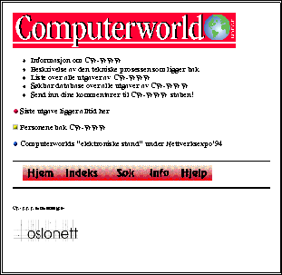
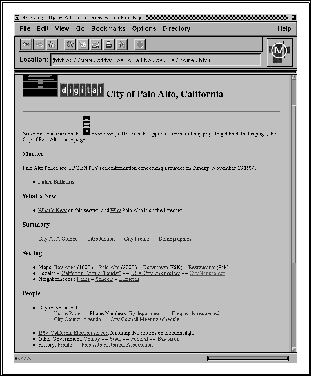
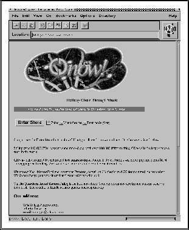
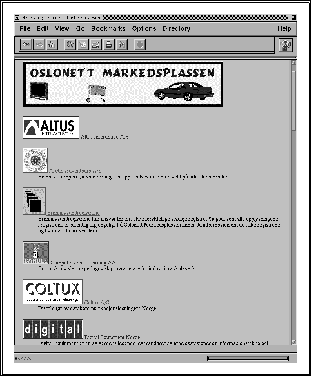

WWW har aksellerert utviklingen av mange nyttige tjenester på Internettet, og den beste måte å orientere seg på, er selvsagt å prøve World Wide Web å vandre omkring (``surfe'') og se hva som finnes! Her er noen eksempler:
Flere aviser over hele verden eksperimenterer med Web utgaver av aviser og andre publikasjoner. I Norge gjør f.eks. Computerworld

dette i samarbeid med Oslonett A/S.
Museer er meget velegnet for opplegg på Internettet. Det finnes da også utallige eksempler på dette, og Library of Congress i USA har vært foregangsfigurer på dette området.
Oslonett A/S stod for den første store live formidlingen gjennom WWW, da vi under OL på Lillehammer sendte resultater og bilder fortløpende ut på Internettet. Tjenesten fikk store oppslag verden over, og for mange mennesker ble dette den viktigste og beste dekningen av OL de hadde tilgjengelig.
Siden er det gjort flere liknende live formidlinger, bla. av fotball VM og den svenske og norske EU avstemningen høsten 1994.
Her er også USA foregangsfigurer, og det er flere prosjekter på statlig såvel som regionalt nivå hvor forvaltningen bruker Internettet og Web som et middel for å kommunisere med borgerne. Norge er dessverre håpløst etter, også sammenliknet med land vi bør kunne sammenlikne oss med (f.eks. Sverige).
Det første store prosjektet i denne sammenheng, var byen Paolo Alto i California som i dag ligger med nærmest hele forvaltningsapparatet på Internettet.


Dette er kanskje det mest markante nye markedssegmentet på Internettet i dag. Firmaer med nok kompetanse rundt WWW teknologien setter gjerne opp tjenesten internt (egen WWW server), men det vanligste er å gå til spesialister på dette. Man kan si at man leier seg elektronisk kontorplass.
Det finnes i dag et haugetalls elektroniske markedsplasser basert på Web teknologi på nettet, og man finner lett fram til disse når man er ute og cruiser.
I Norge har vi foreløpig bare Oslonetts ``Oslonett Markedsplassen''.
